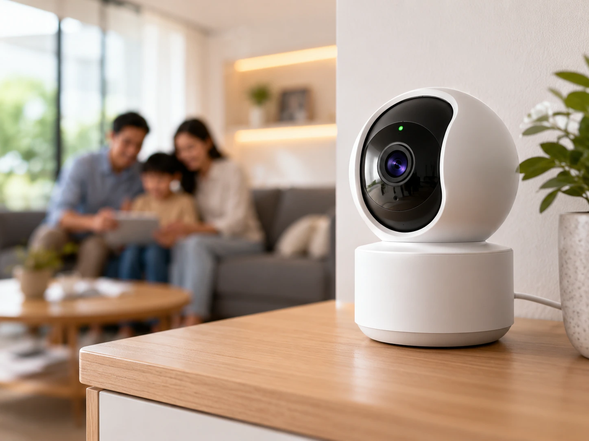

GIGA
Dễ bắt đầuTừ 195.000đ / tháng
Download300 Mbps*
Upload300 Mbps*
- Phù hợp căn hộ, nhà nhỏ và nhu cầu gia đình cơ bản
- Modem WiFi 6 theo cấu hình hiện hành
- Dễ nâng cấp khi nhu cầu tăng
Chọn Internet theo căn hộ, nhà nhiều tầng, game, làm việc hay camera. Không cần đoán gói nào phù hợp — bắt đầu từ địa chỉ và nhu cầu thực tế của bạn.

Ưu tiên thông tin người dùng cần quyết định nhanh: giá tham khảo, download/upload, thiết bị và tình huống sử dụng.
* Giá, tốc độ, thiết bị và ưu đãi có thể thay đổi theo khu vực/thời điểm. Dữ liệu tham khảo từ các trang FPT Telecom hiện hành; hãy kiểm tra lại theo địa chỉ trước khi đăng ký.
Số tầng, tường, khoảng cách, số thiết bị và thói quen sử dụng thường quan trọng hơn việc chỉ nhìn một con số tốc độ.


Internet là nền tảng; Camera, FPT Play và WiFi thế hệ mới giúp trải nghiệm trở nên trọn vẹn hơn khi đúng nhu cầu.

Dành cho người muốn sẵn sàng cho tốc độ multi-gigabit, nhiều thiết bị và hệ thống mạng thế hệ mới.
Khám phá WiFi 7

Luồng đơn giản để giảm việc phải tự đọc hàng chục gói cước trước khi biết cái nào phù hợp.
Cung cấp khu vực và thông tin liên hệ để kiểm tra điều kiện triển khai.
Số tầng, số thiết bị, game, camera, FPT Play hoặc nhu cầu upload.
Đối chiếu gói cước, modem, WiFi Mesh và ưu đãi theo khu vực.
Xác nhận lịch triển khai sau khi thông tin và hạ tầng phù hợp.
Không dùng một mức giá cho mọi địa chỉ. Website luôn nhắc kiểm tra lại giá, thiết bị và ưu đãi theo khu vực/thời điểm để giảm kỳ vọng sai.
GIGA phù hợp nhu cầu cơ bản và không gian nhỏ; SKY phù hợp nhiều thiết bị hoặc cần download cao; META phù hợp khi upload, cloud, camera hoặc công việc nặng là ưu tiên. Cấu hình thực tế nên xác nhận theo địa chỉ.
Không phải mọi nhà đều bắt buộc, nhưng Mesh thường hữu ích khi có nhiều tầng, nhiều phòng hoặc điểm chết WiFi. Vị trí đặt modem và node cũng ảnh hưởng lớn đến chất lượng phủ sóng.
Không nên hiểu như một báo giá cố định. Giá, thiết bị, khuyến mãi và phí có thể thay đổi theo khu vực và thời điểm; cần kiểm tra lại trước khi chốt.
Có các nhóm gói/combos tích hợp Internet với Camera hoặc truyền hình. Tùy thời điểm có thể có ưu đãi khác nhau.
WiFi còn phụ thuộc chuẩn thiết bị, khoảng cách, vật cản, nhiễu sóng, số thiết bị và vị trí modem. Tốc độ đường truyền cao không tự động đảm bảo mọi góc nhà đều đạt tốc độ tương tự.
Gửi khu vực lắp đặt và nhu cầu chính để đi thẳng đến phương án phù hợp thay vì tự so hàng chục gói.